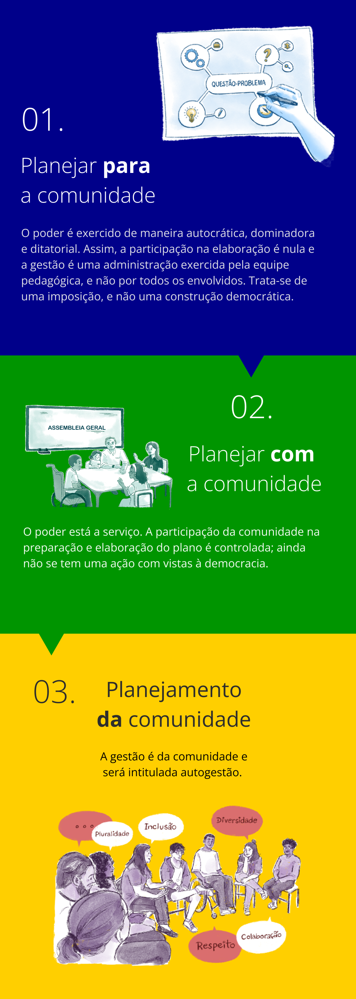

Planejamento Participativo
Neste tópico, propomos uma reflexão sobre a importância de adotar o planejamento participativo como instrumento pedagógico, epistemológico e político de formação e transformação, articulando os diversos documentos institucionais, como o Plano de Desenvolvimento Institucional (PDI), o Projeto Político-Pedagógico Institucional (PPI), Planos de Cursos (PCs), o Projeto Pedagógico do Curso (PPC) e os Estatutos e Regimentos com base nos princípios de igualdade, qualidade, liberdade, gestão democrática e a valorização de todos segmentos.
Saber escutar é uma condição essencial para o desenvolvimento de uma prática educativa e para uma gestão democrática. À medida em que aprendemos a escutar – paciente e criticamente – o educando, a comunidade, a sociedade, segundo Paulo Freire, podemos passar a falar com ele, e não para ele, como se fôssemos detentores da verdade a ser transmitida. Nessa perspectiva, saber escutar requer que se aprenda a escutar o diferente. O educador diz que:
Escutar é obviamente algo que vai mais além da possibilidade auditiva de cada um. Escutar, no sentido aqui discutido, significa a disponibilidade permanente por parte do sujeito que escuta para a abertura à fala do outro, ao gesto do outro, às diferenças do outro
A escuta é também, para Freire, requisito para o diálogo e para a compreensão do conhecimento que o educando traz à situação de ensino-aprendizagem, possibilitando ao educador conhecer e trabalhar a partir da leitura do mundo do educando. Saber escutar é, portanto, uma prática que necessariamente se imbrica na construção do conhecimento crítico-emancipador. É importante lembrar – com Freire – que a prática do saber escutar implica posturas que requerem do educador novos aprendizados, como humildade, amorosidade, respeito aos saberes e aos educandos, tolerância e diálogo.
Para proporcionar uma análise mais ampla e complementar sobre o planejamento, Egeslaine de Nez e Warley de Souza (2018) ressaltam a existência de três metodologias de planejamento que anunciam linhas diferentes de ações que uma instituição de ensino pode adotar:

Título: Linhas de planejamento
Fonte: Prosa (2024a).
Para tanto, segundo António Nóvoa e Yara Alvim (2021), parte-se do desafio de conceber a instituição formadora como um espaço comum e coletivo de convivência entre sujeitos com diferentes objetivos e concepções. Isso implica valorizar a pluralidade humana e social, entendendo que é na diferença que aprendemos uns com os outros, na interação com nosso meio social e cultural. A educação é um processo coletivo, e o PPI da escola ou da universidade tem que levar isso em conta. Aprendemos na interrelação entre nós e o meio em que vivemos.
É necessário termos, ainda, o discernimento de que o espaço da escola e da universidade é o oposto do que encontramos em casa. Em casa, estamos entre iguais, em um ambiente privado que é só nosso; na escola e na universidade, estamos entre diferentes, em um ambiente público que é de muitos. Contudo, é importante nos atentarmos ao fato de que o que nos educa é a diferença.
A grande contribuição de uma instituição escolar formadora é ser diferente da casa, nosso ambiente familiar. Os professores desempenham um papel distinto dos pais, e os colegas são diferentes dos irmãos. Por essa razão, é muito importante a colaboração entre as escolas e as famílias, tendo em vista suas funções diferentes, mas complementares, na formação dos estudantes. A educação não deve nos limitar ao que já somos, mas sim nos impulsionar a nos tornarmos aquilo que ainda não somos: cidadãos de uma nação e do mundo.
Aprender também não é um ato individual ou privado, é preciso a participação de outros, uma vez que é na relação e na interdependência que se constrói a educação. Não aprendemos interagindo somente com a nossa bolha, mas também com a riqueza e a pluralidade social que devem estar expressas nas escolas e nas universidades, sejam elas públicas ou privadas.
Título: Formaturas e Colações de grau (4) | Ministério da Educação | Flickr.
Fonte: Gescom (2024a)
O ser humano é um ser social, ou seja, que existe em conjunto com os outros. A função socializadora da escola e da educação é ensinar a viver em conjunto, respeitando toda a diversidade humana. Também é formar para a cidadania, para a democracia e para fazer parte de coletividades, sociedades, culturas diversas e grupos sociais e profissionais distintos.
Nessa perspectiva, o planejamento participativo poderá constituir-se como um instrumento pedagógico e político de transformação. Então, a reflexão sobre o planejar precisa ocorrer coletivamente e, por sua vez, deverá respeitar os pressupostos de uma proposta referenciada e pensada, a construção teórico metodológica do objeto do planejamento e as considerações sobre os sujeitos, possibilitando descrever alguns instrumentos técnicos que viabilizarão o PPI da escola.
Em síntese, na efetivação da proposta deste tipo de planejamento, é importante que sejam ressaltadas as suas principais diretrizes: a ação de planejar implica a participação ativa de todos os envolvidos no processo de ensino, inclusive a comunidade externa. Além disso, deve-se partir da realidade concreta para atingir o fim amplo da educação.